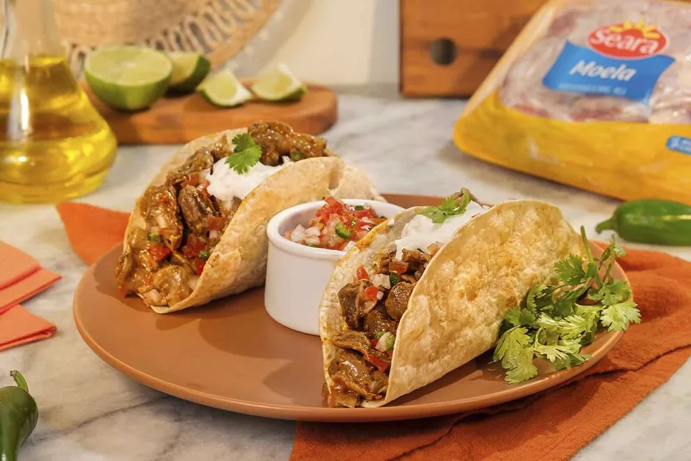

História e cultura
Olhar os detalhes
Reserve tempo para percorrer palácios e templos sem pressa e conhecer as histórias que contextualizam os espaços.
Saiba mais sobre cultura →
Viajar com curiosidade
O México não cabe em um único roteiro nem em uma única imagem. A escala do território e a variedade de comunidades e paisagens pedem escolhas: uma viagem pode priorizar patrimônio, gastronomia, cidades ou natureza.
Uma boa maneira de construir um itinerário é escolher poucos lugares, conhecer seus contextos e permitir tempo para observar o cotidiano, além dos pontos mais conhecidos.
Ideias para combinar
Combine uma experiência cultural, uma pausa à mesa e uma paisagem ao ar livre, respeitando o tempo necessário entre regiões.
História e cultura
Reserve tempo para percorrer palácios e templos sem pressa e conhecer as histórias que contextualizam os espaços.
Saiba mais sobre cultura →
Gastronomia
Experimente uma refeição regional e observe como ingredientes e modos de servir variam de um lugar para outro.
Conheça os sabores →
Paisagem e natureza
Inclua um dia na pirâmides sagradas dos antigod Maias para perceber a imponência e a diversidade das paisagens.
Explorar lugares e cidades →Um roteiro mais consciente
Escolha os lugares mais importantes para você e confira o tempo real de deslocamento antes de acrescentar novos destinos.
Leia sobre a história e os costumes da região que pretende visitar; isso torna a visita mais atenta e respeitosa.
Explore mercados e restaurantes locais, pergunte sobre os pratos e considere que receitas semelhantes podem mudar bastante entre regiões.
Siga as orientações em lugares sagrados, áreas naturais e sítios históricos, e evite interferir na rotina das comunidades.
Créditos das fotografias: veja as fontes da galeria de pontos turísticos e da página de gastronomia.